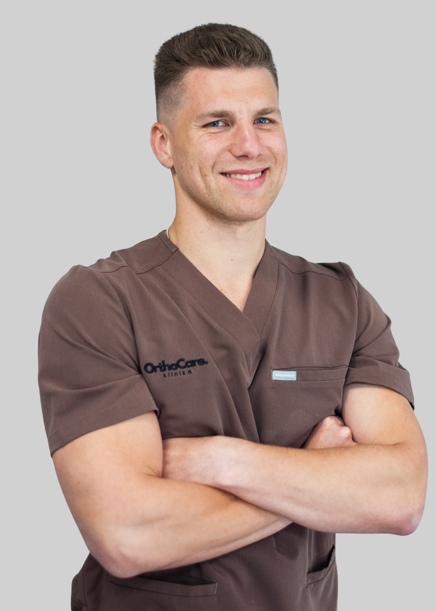

lek. Michał Papiewski
Ortopeda, w trakcie specjalizacji
Lek. Michał Papiewski jest absolwentem Collegium Medicum Uniwersytetu Mikołaja Kopernika. Obecnie odbywa szkolenie specjalizacyjne w Klinice Ortopedii i Traumatologii Uniwersyteckiego Szpitala Klinicznego nr 4 w Lublinie, a także pracuje w Radomskim Szpitalu Specjalistycznym oraz Mazowieckim Szpitalu Specjalistycznym.
Interesuje się ortopedią sportową, medycyną regeneracyjną oraz nowoczesnymi technikami leczenia urazów stawów i kręgosłupa. Jako aktywny sportowiec ma dobre zrozumienie potrzeb pacjentów aktywnych fizycznie. W codziennej pracy koncentruje się na leczeniu problemów związanych z kolanem, barkiem, stawem skokowym, łokciowym i kręgosłupem. Wykonuje iniekcje dostawowe, zabiegi z wykorzystaniem PRP oraz kwalifikacje do leczenia operacyjnego.
Jest członkiem Polskiego Towarzystwa Ortopedii i Traumatologii, a swoją wiedzę stale poszerza uczestnicząc w kursach i konferencjach, dzięki czemu stosuje w praktyce aktualne, skuteczne i bezpieczne metody leczenia.
